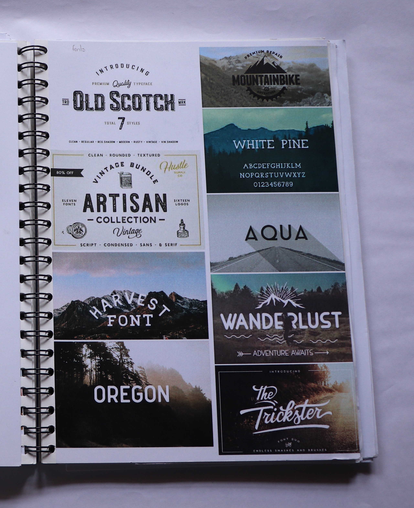
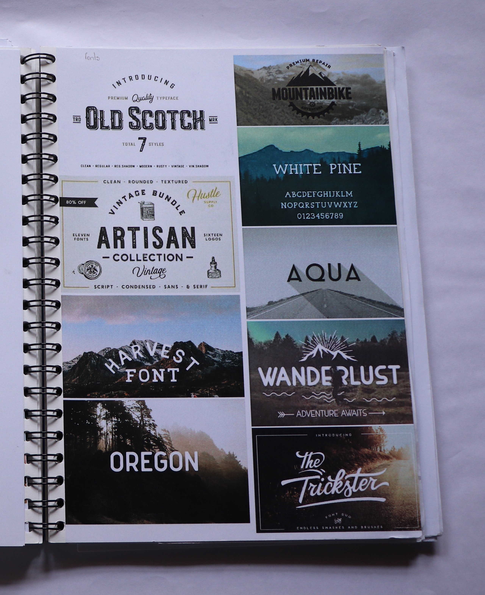

Product and competitor research After selecting your product cluster, conduct and in-depth research of the three products and the competitors in the field (develop your own creative research methods). Analyze competitor packaging and identify their key design elements. What colour scheme do they all follow? Are they mostly typographic, illustrative, or photography-based?What gaps are there in the target audience? Is there any niche or sub-culture which hasn’t been explored yet? Target audience research Once your innovative intended audience or function has been identified, get to know your target audience through visual documentation of a typical ‘week in the life of...’. Create a persona of your customer: give them a name, age, job, etc. Apart from the conventional demographics, photograph places, people, objects, hobbies, clothing, events, interiors, books, music, films, etc. that your potential customer likes. You can create a Facebook/Instagram account for your persona, and keep it active for a week or two. Present this verbal (demographics) and visual (photos) data in an innovative way in your sketchbook.
 
